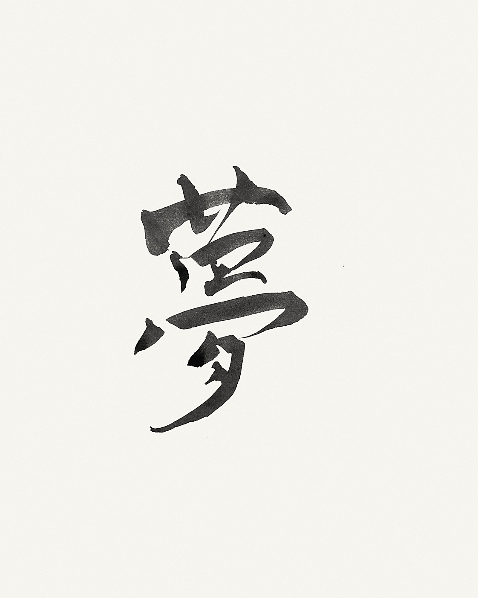

THE KOHEI KONDO PROJECT / KYOTO, JAPAN
日本の美しさを、
世界の言葉へ。
京都の静けさ、余白、祈り。
書家・近藤晃平の作品を通して、日本の感覚を現代の暮らしへ届けるアートプロジェクトです。

SCROLL TO EXPLORE ↓
ABOUT THE PROJECT
／ 近藤晃平について
一本の線に、
日本の時間を宿す。
近藤晃平は、書を起点に、ことば・音・デジタルアートを横断する京都の表現者です。古くから受け継がれてきた筆と墨の美意識を、世界の誰かの日常に置ける形へ。KOHEI KONDO ART PROJECT は、その作品と思想を届けるための公式プラットフォームです。
SELECTED WORKS / 作品
Words
from Kyoto.
筆の勢い、墨の濃淡、そして余白。京都で生まれた一瞬の線を、日常に置ける形へ。
ARTWORK STORY / 喜氣
喜びの氣が、
自分から周囲へ
広がっていく。
「喜氣（きき）」は、祝い、祝福、生きる歓びを結んだ言葉です。見る人の内側にある軽やかな力が、やがて周囲へ広がっていくことを願っています。
COLLECT THE WORKS
気に入った言葉を、
あなたの場所へ。
デジタルアート、プリント、壁紙として作品を迎えられます。作品との出会いから、日々に置くまでをシンプルに。
ONLINE STORE を見る ↗NEXT CHAPTER / NFT
作品の来歴と価値を、
次のかたちへ。
NFTコレクションは準備中です。デジタル上でも作品の背景と所有の物語を大切にできる、新しい発表の場を構想しています。
JOURNAL / X
制作の背景と、
京都の日々。
作品に込めた言葉や、制作の途中に出会った景色。新しい発信は、こちらから。
Xの投稿を読み込めませんでした。@kohei_sun0127 をご覧ください。
FOLLOW THE PROJECT
次の作品との
出会いを、ここから。
新作、展示、制作の背景。KOHEI KONDO ART PROJECT の最新情報は、各SNSからお届けします。